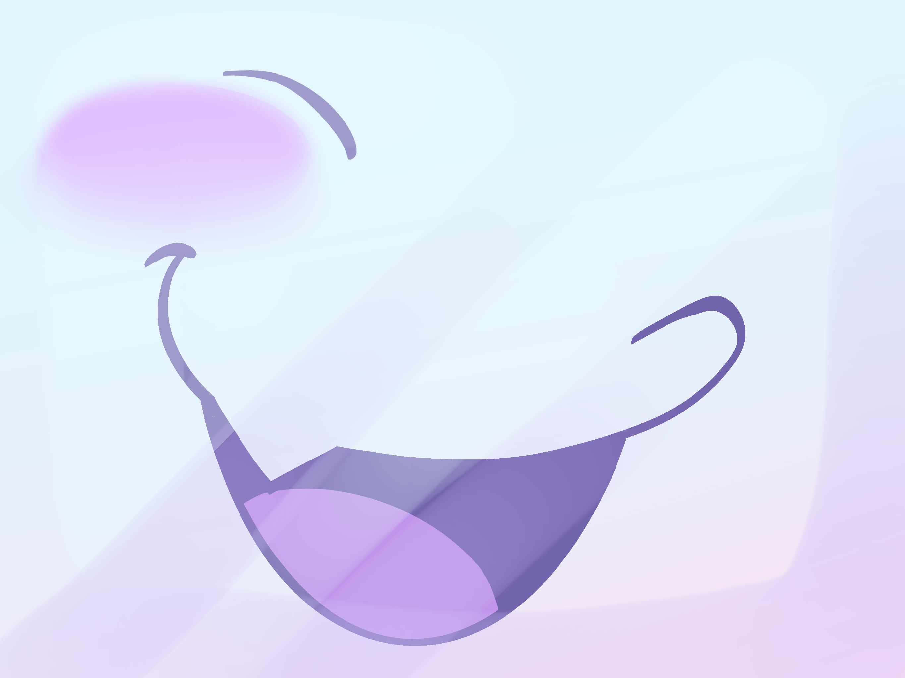

Tenna face guide
How the iPad face works, and how to control it during the cosplay.
Open the face →1. What it does
The iPad sits in the helmet and shows Tenna's face. A microphone picks up your voice, and the mouth opens and closes as you talk. Louder talking opens it wider.
You change Tenna's mood (which set of mouths is shown) with a Bluetooth controller or a small Bluetooth keyboard or clicker. You can also switch the screen to TV mode: glitchy colour bars, or a burst of static.
Nothing needs internet once the face has started. The videos download while the start screen is showing, so after that a bad connection at the event doesn't matter.
2. Starting the face
- Plug the USB microphone into the iPad (through the powered hub) and connect the Bluetooth controller or keyboard.
- Open face.html in Safari (the button at the top of this page). Use the
https://address; the microphone only works on https. Other iPad browsers (Firefox, Chrome) can't go full screen, and may not support voice trigger words. - Wait until the start screen says the videos have finished downloading.
- Tap Tap to start and choose Allow when Safari asks for the microphone.
- Stay quiet for 2 seconds. The face uses that time to learn how loud the room is, so background noise doesn't move the mouth.
- Talk. The mouth should move. If it doesn't, see Troubleshooting.
- Go full screen. Best: in Safari tap Share → Add to Home Screen (the panel's Add to Home Screen… button walks you through it), then always open the face from that icon. It runs with no Safari bars and no ✕ button. The quick way: double-tap to open the tuning panel and tap Enter full screen. Safari then shows a grey ✕ in the top-left corner that a web page can't hide.
3. The faces

4. Changing mood
Each mood is its own set of mouths. Press the mood's button and the face switches straight away. If the TV was showing something, it also goes back to the face. Left and right on the D-pad (or the arrow keys) step through the moods in order.
The tables below are read from the settings file, so they always match what the face actually does.
5. TV tricks: bars, static
Colour bars
Press for glitchy TV colour bars ("technical difficulties"). Press it again to go back to the face. With voice on, saying also brings up the bars, and any mood's trigger word goes back to the face.
Back to the face
Press , or any mood button, to flip back to the face (through static).
Static burst
Press while the face is showing for a quick flash of static, like the signal cutting out for a moment.
6. All controls in one table
Controller names: Xbox-style first, PlayStation in brackets. An 8BitDo controller in Xbox/X-input mode uses the same layout.
| What it does | Keyboard | Controller |
|---|
You can also double-tap the screen to open the tuning panel.
7. How the mouth follows your voice
The face measures how loud the microphone is many times a second and compares it with the quiet room noise it learned at the start:
- Quieter than the open level: the mouth stays closed (the first drawing of the mood).
- Louder than open: the mouth opens.
- The louder you get, up to the widest frame level, the more open the drawing it picks.
- It only closes again when the sound drops below the close level. That gap stops the mouth flickering on and off in the middle of a word.
It reacts to how loud the sound is, not the actual words, so it works for any language, singing and laughing too. It can't tell your voice from someone shouting right next to you, so a mic close to your mouth works best.
8. The tuning panel
Open it by double-tapping the screen, pressing , and close it the same way. Drag a slider's round blue handle with your finger to change it. Slider changes are saved on the iPad. If the panel is taller than the screen, scroll inside it.
| Setting | What to do with it |
|---|---|
| level / meter | The green bar shows how loud the mic is right now. Watch it while you talk to check the mic works. |
| open | The mouth opens when you're this many dB louder than the room. Raise it if background noise makes the mouth move when you're silent. Lower it if quiet talking doesn't open the mouth. |
| close | The mouth closes below this level. Keep it a few dB under "open". If the mouth stays open too long after you stop, raise it. |
| widest frame | How loud you need to be for the most open mouth. Lower it if the widest mouth never shows up; raise it if the mouth is always wide open. |
| release speed | How quickly the mouth relaxes after a sound. Higher is snappier; lower is smoother. |
| min frame time | The shortest time one drawing stays up. Raise it if the mouth looks jittery. |
| Add to Home Screen… | Safari doesn't let a page add itself, so this button shows the 3 steps and points at Safari's Share button (leaving full screen first so the toolbar is visible). "Try the share sheet" opens the iPad's share menu, but Add to Home Screen may only be in Safari's own Share button. Hidden when the face is already running from its Home Screen icon. |
| Enter / Exit full screen | Hides Safari's address bar and tabs so the face fills the screen (Safari adds a ✕ button you can't hide). This button isn't shown when the face is opened from its Home Screen icon, because it's already full screen there. It has to be a tap (Safari doesn't allow a controller button to do this). Swiping down from the top or tapping Safari's ✕ also exits. |
| Re-learn noise floor | Stay quiet for 2 seconds after pressing it. Do this whenever the room changes. |
| Voice on/off | Turns voice trigger words on or off. The button says whether voice is on and what it's doing ("listening", "restarting", or an error). If it shows an error, the "voice" line at the top of the panel says why. |
| Reset sliders | Puts every slider back to its starting value. |
| page scroll | At the end of the "A/B" line. It should always read 0/0. If panel buttons ever stop responding to taps, check this value: anything else means the page has shifted and taps are landing off target. |
| controller … last button | Shows the number of the last controller button pressed. Handy if a controller's buttons don't match the table above. |
| Switch static type | Test option for the static. You don't need these at an event. |
9. Voice trigger words (optional)
The face can also change mood by itself when it hears certain words, for example "haha" makes it happy. It's off by default because Safari's speech recognition needs an internet connection, which events often don't have.
Turn it on or off with or the panel's Voice on/off button. A mood from a trigger word lasts 10 seconds and then goes back to the mood you picked with the controller. The trigger words for each mood are listed in the mood tables above.
10. Tips for the event
- Load the face while you have Wi-Fi (hotel, home) and leave Safari open on it. Once started, it doesn't need internet.
- Turn off Auto-Lock: Settings → Display & Brightness → Auto-Lock → Never. The page also asks the iPad to stay awake, but this is the safer setting.
- Guided Access (Settings → Accessibility → Guided Access) keeps the iPad locked to Safari so a bump can't close it. Triple-click the top button to start or end it.
- Add to Home Screen (Share → Add to Home Screen) opens the face full screen without Safari's address bar.
- Keep the controller charged, and check it's connected before putting the helmet on: press a mood button and watch the face change.
- Turn the brightness up; the helmet visor dims the screen.
11. Troubleshooting
| Problem | Fix |
|---|---|
| "Microphone failed" when tapping start | Make sure the address starts with https://. Check Settings → Safari → Microphone is set to Ask or Allow. Reload and tap Allow. |
| Safari says the connection isn't private (local test server) | That's expected for the test server. Tap Show Details → visit this website → Visit Website. |
| "Tap to start" does nothing | Read the red text under the button: it says what went wrong. If there's no text, fully close the face (swipe it away in the app switcher) and open it again so it loads the latest version. |
| A white or empty bar along the bottom (Home Screen icon) | Fully close the face and reopen it from the icon. If the bar is still there, delete the icon and add it to the Home Screen again: iOS keeps some of the page's settings from when the icon was added. |
| Panel buttons or sliders don't respond to taps | Fully close the face (swipe it away in the app switcher) and open it again. If it happens again, note the panel's page scroll value and pass it on to whoever set it up. |
| The mouth never moves | Open the panel and talk: if the green meter doesn't move, the iPad isn't hearing the mic (check the USB mic and hub). If the meter moves but the mouth doesn't, lower open. |
| The mouth moves when nobody is talking | Press Re-learn noise floor and stay quiet, or raise open. |
| Controller does nothing | Press any button once: Safari only notices a controller after a press. Check it's paired in Settings → Bluetooth. The panel shows "controller none" until it's seen. |
| A controller button does the wrong thing | Open the panel, press the button, and read "last button". Tell whoever set it up; the numbers are changed in face-config.js. |
| "Full screen failed" or "not supported" | Use Safari: other iPad browsers don't allow pages to go full screen. Or use Safari's Share → Add to Home Screen and open the face from that icon, which always runs without any browser bars. |
| Grey ✕ in the top-left, or bars and dots at the screen edges | The ✕ is Safari's full-screen button. Open the face from its Home Screen icon instead and it goes away. The thin bar at the bottom, the "…" dots at the top and the clock and battery belong to iPadOS itself, and no web page can hide them. Turning the brightness up and keeping them behind the helmet's frame is the best you can do. |
| Thin coloured bars at the edges of the face | The face is shown whole, so if the visible area isn't the same shape as the art, the gaps are filled with the screen colour. Tap Enter full screen in the panel; on the iPad the face then fills the screen. |
| Colour bars are black or won't play | The video may not have finished downloading. Reload with a connection and wait for the start screen to say it's done. |
12. For whoever sets it up
Testing on the iPad from a computer
- Install Node.js on the computer. Git for Windows already includes
openssl, which the server needs once to make its certificate. - In the project folder run
node serve.mjs. It prints the addresses to open, for examplehttps://192.168.x.x:8443/face.html. - Put the iPad on the same Wi-Fi and open that address. Accept the certificate warning (see Troubleshooting).
- On Windows, if the iPad can't connect, allow Node.js through the firewall on private networks (Windows asks the first time the server starts).
The server makes its certificate the first time it runs (in a hidden .cert folder, which isn't included in the zip). For the event itself, host the folder somewhere with real HTTPS (e.g. GitHub Pages) so there's no certificate warning. Remember to add the face to the Home Screen again from the new address.
Home Screen app notes
- The face detects when it runs from a Home Screen icon. It then sizes itself to the whole screen (iOS otherwise leaves a bar at the bottom) and hides the full-screen and Add to Home Screen buttons.
- After changing any files, fully close the Home Screen app and reopen it to load them. If the layout looks wrong, delete the icon and add it again: iOS keeps some settings from when the icon was added.
Files
| File | What it is |
|---|---|
face.html | The face page itself. |
face-config.js | Settings to edit: starting face style, moods per style, keys, controller buttons, trigger words, slider defaults, TV options. |
assets/faces/Commissioned/ | The artist's renders: normal, happy, angry (frames 0.png closed → 4.png most open) and extras (single poses). |
assets/manifest.js | Lists every face set and its frame order, plus the videos. |
assets/theme.css | Screen colours behind the faces. |
preview.html | Shows every face set animating side by side, and every video. |
assets/icon-180.png | The Home Screen icon. |
serve.mjs | The local test server. |
Changing the order of a set's frames
The mouth uses a set's frames in the order listed in assets/manifest.js: the first is the closed mouth and the last is the most open. To change the order, reorder that list, or rename the image files.